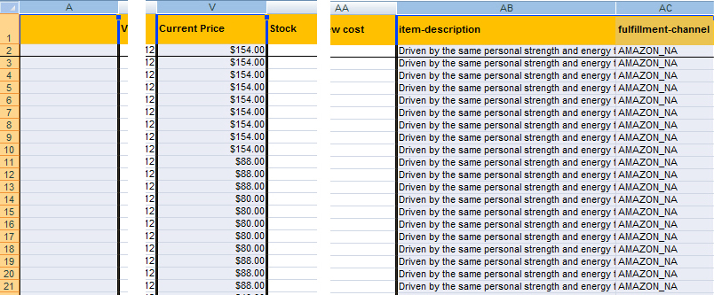
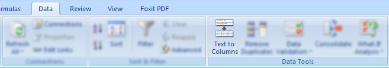
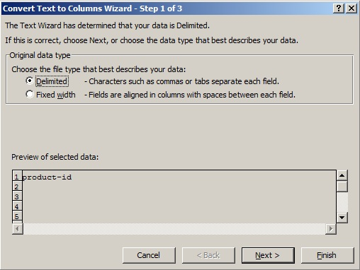
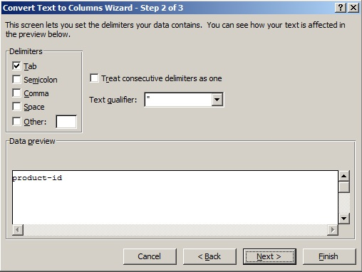
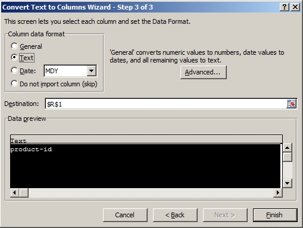

To significantly reduce processing time and avoid upload errors, please follow the instructions on uploading the Excel of the Masterfile.
Step 1 |
Make a copy of the original file.
Several changes will be made and might affect the data. Although optional, it is highly recommended. |
Step 2 |
Delete unnecessary columns.
Please delete the first, item-description, ALL other link views, and fulfillment-channel columns (if they exist). This is required because of the conversion format and to decrease file size. |
|  | |
The columns needed are:
|
Step 3 |
Keep original number format of column ("product-id").
To avoid the product ID to be converted to scientific notation (cases for large numbers), the column should be changed that appropriates the .csv format as well. |
|
Step 3.1. Highlight the product ID column. Step 3.2. Go to Data > Text to Columns (Data Tools)  Step 3.3. Choose Delimited. Click Next.  Step 3.4. Check Tab. For text qualifier, choose the double quotes (").  Step 3.5. For column data format, choose Text. Then finish.  |
Step 4 |
Saving as .csv
When saving, save it as CSV (Comma delimited) (*.csv) |
|
Note! You should never open .csv with Excel unless necessary (if so, repeat Step 3).
You can open .csv files with text editors such as Notepad. |